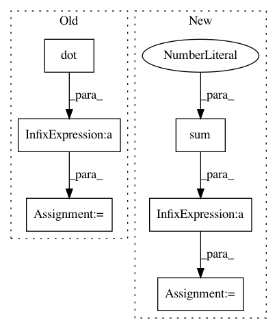

d355f7fa74f8dd03b2e431b80b1a59c3bae70740,nisl/honorio_samaras.py,,honorio_samaras,#Any#Any#Any#Any#Any#Any#Any#,27
Before Change
// Compute c
for k in xrange(n_tasks):
c[k] = - n_samples[k] * (
emp_covs[p, p, k] * np.dot(h_12[k, :], y_1[k, :])
+ u[k, m]
)
c2 = np.sqrt(np.dot(c, c))
// x -> y[:][m]
After Change
y_1[:, m:] = y[:, m + 1:]
// Compute c
c[:] = - n_samples * (
emp_covs[p, p, :] * (h_12 * y_1).sum(axis=1) + u[:, m]
)
c2 = np.sqrt(np.dot(c, c))
// x -> y[:][m]
if c2 <= rho:
In pattern: SUPERPATTERN
Frequency: 3
Non-data size: 6
Instances
Project Name: nilearn/nilearn
Commit Name: d355f7fa74f8dd03b2e431b80b1a59c3bae70740
Time: 2013-08-26
Author: philippe.gervais@inria.fr
File Name: nisl/honorio_samaras.py
Class Name:
Method Name: honorio_samaras
Project Name: tensorly/tensorly
Commit Name: 6dfa3d3e9a6a668ca6380134da7db7b63fad7f6a
Time: 2021-02-25
Author: caglayan.tuna@irisa.fr
File Name: tensorly/decomposition/_nn_cp.py
Class Name:
Method Name: non_negative_parafac_hals
Project Name: SheffieldML/GPy
Commit Name: 56acbf4e0a09b2a4a3c35c787378c137961076a1
Time: 2015-09-04
Author: james.hensman@gmail.com
File Name: GPy/inference/latent_function_inference/var_gauss.py
Class Name: VarGauss
Method Name: inference